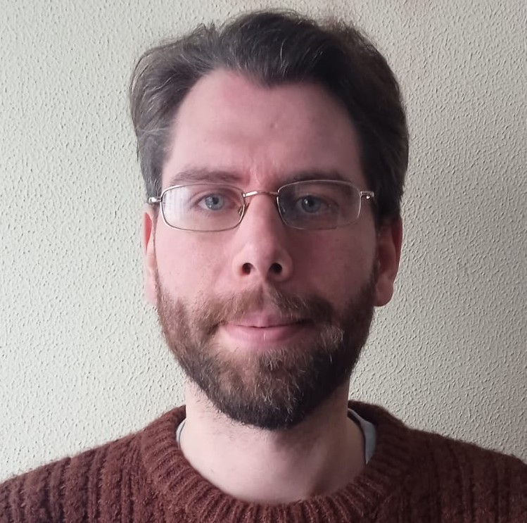

Níon Ross Geraghty
Full-Stack Web developer

Summary
An Irishman, currently living in Spain and working as an English teacher.
I studied computer engineering in university where I was taught the skills
required to approach and solve a variety of problems related to computer
programming, primarily using the language C++.
I'm now studying an online course to learn all the skills necessary to
become a full-stack web developer, which is the area I would like to begin
working in.
Education
- B.A.I Computer Engineering - Trinity College Dublin (2011-2015)
- The Complete Full-Stack Web Development Bootcamp - udemy.com (2025)
- Level 5 certificate in Teaching English as a Foreign Language - The TEFL Institute of Ireland (2020)
Work experience
-
English teacher
Piccadilly English in Motion,
Santiago de Compostela
2022-Present
-
English language assistant
Galicia, Spain
2019-2022
-
Musician
Dublin, Ireland
2015-2019
Skills
-
Computer Languages:
-
Languages:
- English: Native speaker
- Spanish: High intermediate level
- Irish: Low intermediate level
- Japanese: Basic level
- Instruments:
Accomplishments
- First Dan black belt in karate
About Contact